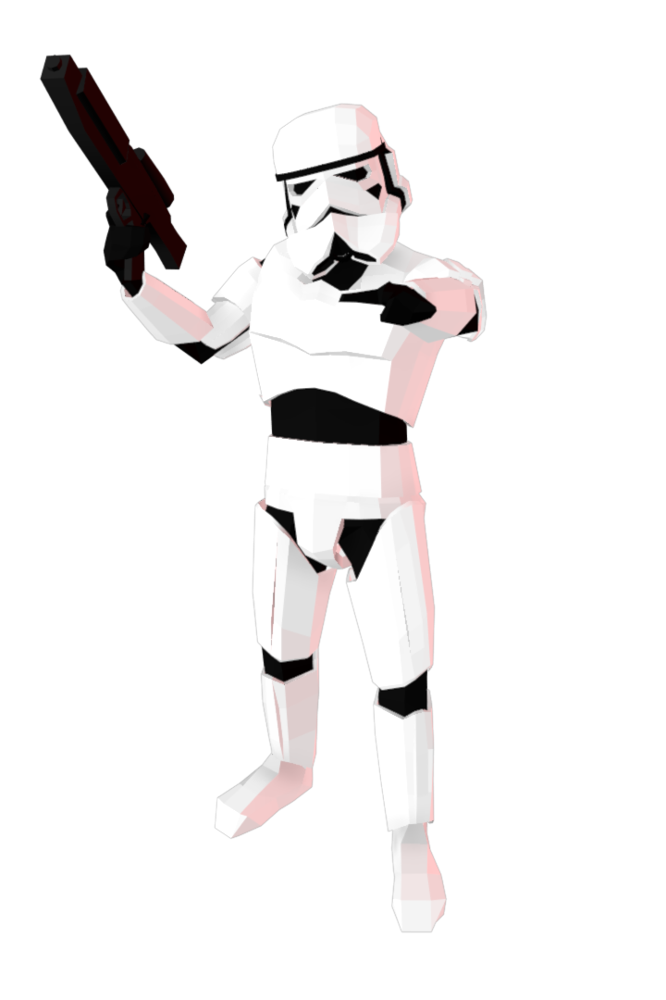
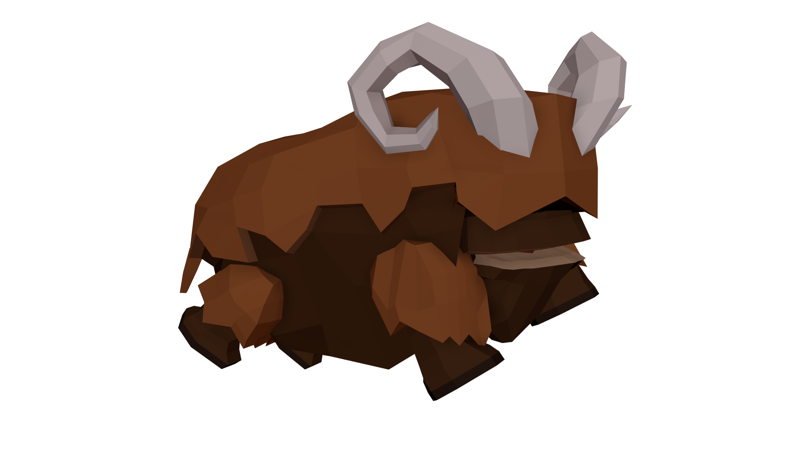
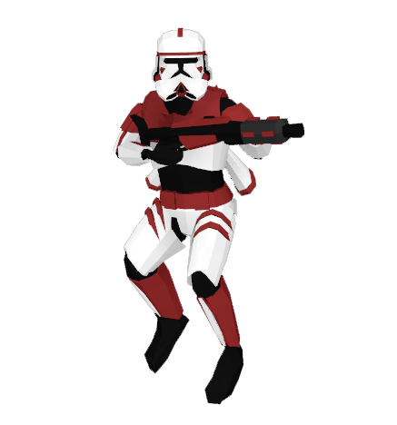
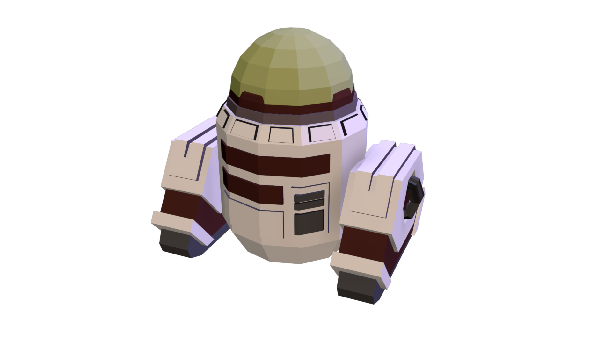
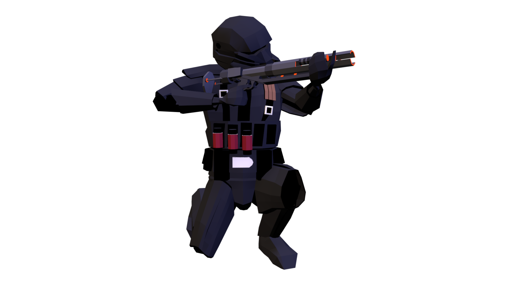
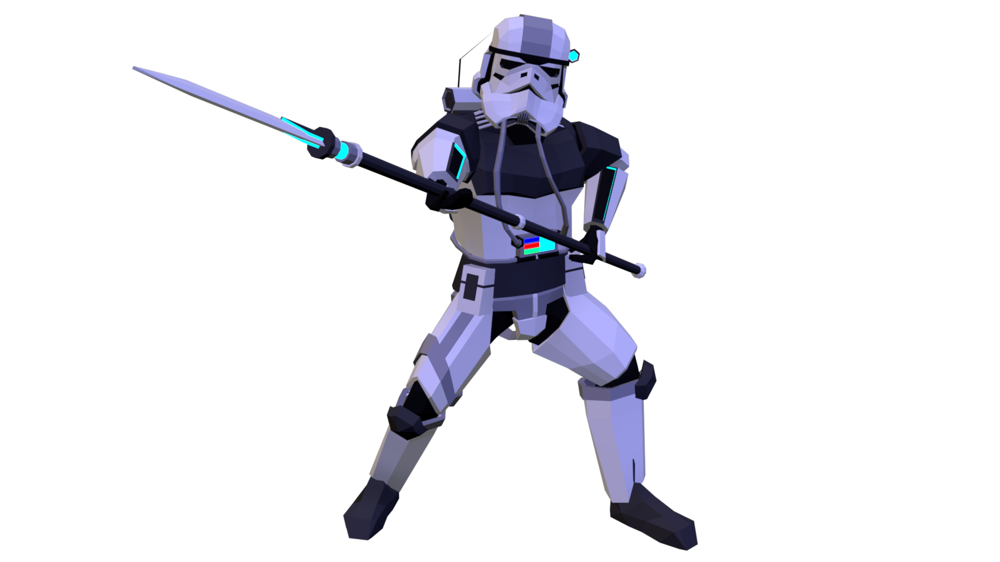
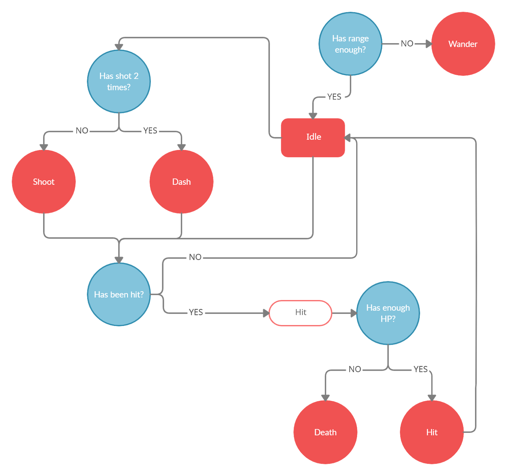

Carlos Redolar
Design
Project Overview
Being part of the design department I have been able to participate and influence the vast majority of decisions about the game, specifically around gampelay, as my main focus has been on the enemies and they affect it very directly. I am very grateful and proud to have been able to contribute to the team both as a designer and as a programmer of enemies and other aspects of gameplay. It has been a pleasure to collaborate with different members of the departments and to work side by side, trying to maintain the best possible communication.
Enemies
Stormtrooper
Design + Implementation
Bantha
Design + Implementation
Skytrooper
Design + Implementation
Laser turret
Design + Implementation
Deathtrooper
Redesign + Implementation
Heavytrooper
Implementation
Design documents
I have been in charge of designing all enemies of our game, making a list of datasheets with the following content:
- General description
- Enemy statistics
- Explanation of the mechanics
- Visual references and guidelines for the modeling, animation and audio artists
- Behaviour trees

Implementation
With regard to the implementation of the enemies, I have been involved in the following sections:
- State machines
- Mechanics implementation
- Enemies AI
- Audio implementation
- Bugfixing and polish

Visual feedback
I made some enemies have visual feedback, like the Bantha and the Skytrooper. So I made the 2D artwork for that feedback and I also implemented it.
Bosses
Moff Gideon Redesign
From the design department we realised that the final boss we had initially planned and implemented lacked fun, so a couple of colleagues and I took it upon ourselves to redesign the mechanics and behaviours of this boss, also doing a rework to its code.

Implementation
I was also helping with the implementation of different functions, moves and attacks of Rancor and Moff Gideon,
such as dashes, wander, combos...
In addition, I have been playing them in order to balance that bosses, changing gameplay values and scaling models
in Rancor case.

Wave System
Developing the system
On the basis of the initial wave system we had to make a few changes to things we wanted to be able to set from the inspector and some new variables:
- How much time between waves
- How many enemies the initial wave will have
- How many enemies are increased or decreased for each new wave
- How much delay between spawns in the same wave
- How many enemies must be left to spawn the next wave

Spawn Implementation
After finishing the wave system, I had to implement this new system and the corresponding spawnpoints in their correct position in each room of each level. I also put the characteristics of each spawn according to what types of enemy we wanted to summon and an initial approach with values of the waves to each room.

Wave Balance
During the different milestones I have been one of the people in charge of testing the rooms, and after that changing the values of the waves of those rooms that needed changes in order to balance them.
Game Balance & Polish
Testing and balancing
As I mentioned before, I have been playing the game and testing different rooms, enemies and bosses.
And along with this I have been adjusting the values of the waves, the enemies and the main character. As I have been involved
to a greater or lesser extent in all the phases of creation of the enemies, following the player to go according to the development
of the enemies, and with the rework to the waves.
The values like damage and health points have been quite a hard work as the difficulty progress through the levels was not easy to balance.
The feedback from the playtest sessions and the personal feedback from many of the department was a great help in this final stretch.

Level Polish
As for the levels, I was doing a review of the rooms (especially level 1), and then I wrote a feedback document about problems (visibility, safe zones, too dangerous areas, faulty colliders...) and how I would fix them. In this document I detailed the changes I would make to those rooms. Most of the changes were approved by the department, and the changes that could be made from the engine or code were made. However, there was a part of these changes which coudn't be made like this, so I had to make a request to the art department because that problems had to be solved from modelling, since we could not edit some meshes from the engine.